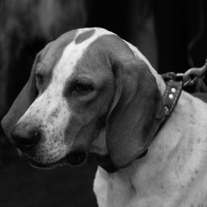
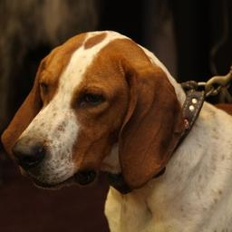

Redonner une couleur plausible au gris.
Un modèle de deep learning colorise des images en niveaux de gris. La page présente le pipeline, l’architecture, l’entraînement et l’évaluation.



Le pipeline
Les images passent dans l’espace CIELAB. Le modèle reçoit la luminance L et prédit les canaux chromatiques a et b. Un U-Net léger, enrichi par une attention CBAM, reconstruit ensuite l’image colorisée.
- Convertir l’image en CIELAB et isoler le canal L.
- Faire prédire les canaux a et b par U-Net + CBAM.
- Recomposer les canaux puis convertir vers RGB.
Le modèle apprend une couleur plausible, pas la couleur historique certaine d’une image noir et blanc.
Mesurer avant de montrer
Résultats d’une évaluation indépendante sur 100 images de test, sélectionnées avec la seed 42.
Les couleurs sont plausibles, mais une image noir et blanc ne permet pas de garantir les couleurs historiques d’origine.
Voir le modèle travailler
La vidéo résume le pipeline, l’architecture et les sorties sélectionnées.
Résumé textuel
La démonstration montre la conversion en CIELAB, le passage du canal de luminance dans le modèle U-Net avec CBAM, puis la reconstruction et la comparaison avec la référence.
Ce que j’ai appris
Ce projet m’a appris à séparer la qualité visuelle d’une colorisation de sa fidélité historique. J’ai aussi appris à présenter les métriques avec le jeu de test, la méthode et les limites qui les accompagnent.